XCP-ng getting started
This month, I would like to show you how to set up your first XCP-ng instance.
XCP-ng is my Hypervisor of choice, I have been using for years now at work.
At my company, this is our solution for our lab in APAC and this is a rock solid solution. I have never experienced any issue with it except when disks are failing on us. So no issues with XCP-NG but don’t trust your hardware especially the disks which will fail one day !
Few years ago XCP-NG was not as intuitive as the other hypervisor to get started Vmware Esxi was very easy to use and really good solution. This is not an option anymore as Qualcomm as decided to target only Tier 1 market. Proxmox is very well known in the homelaber community but I have never tested it.
Today XCP-NG, with XO-LITE and Xen Orchestra ( aka XOA ) is now getting much easier to install and maintain a single node or manage multiple nodes.
This is what I would like to show you.
In simple architecture for an home lab as of today you will need to install XCP-ng and then deploy Xen Orchestra.
XCP-ng is the hypervisor which will host your Virtual machines and XOA is the layer that permits you to deploy, configure, monitor your XCP-ng hosts and Virtual machines.
XO lite is a built-in management tool for a single XCP-ng machine you can also deploy XOA from it.
This is not clear up what level of feature Vates itend to go to for XO lite. So far as I know the goal of this version is to provide a single node only capable solution to deploy VMs, and administer the node on which it is running on. This should be good enough for an home-laber that don’t need to run several XCP-ng nodes ( machines ) .
That said, this is still a long way to be done. This is still a work in progress.
From my initial testing with XO lite you can deploy XOA full version and perform only basic configuration.
You’ll find lot’s of button that don’t work and teasing you future features.
With this is mind as of now the main route for now is once you have installed XCP-ng on your machine you will deploy XOA, from XO lite directly.
XOA is web the based application that you will have to deploy as a virtual machine in XCP-ng to administer your XCP-ng and VMs infrastructure.
Now let’s get started with the installation of of XCP-ng.
First you need to download the ISO image
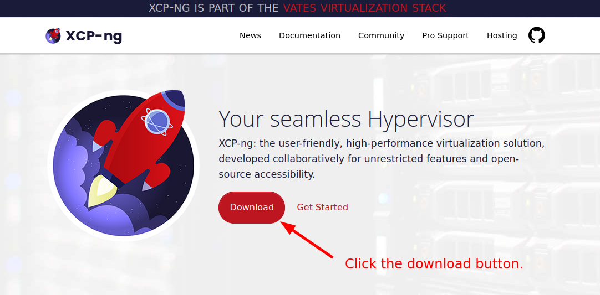
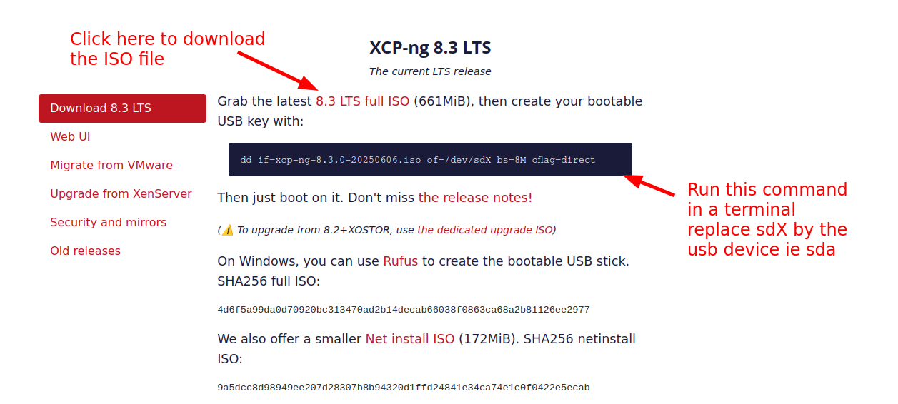
Once the image has been downloaded, if your Linux distribution doesn’t mount automatically your USB key ( which is good for a security stand point ), in a terminal run “sudo dmesg -Tw” then plug your USB stick.
With this command you will see on which device your USB stick has been detected.
You can stop dmesg with the shortcut key “Ctrl + c”, you will then return to the terminal prompt.
If your USB key has been automatically mounted, un-mount it with the command “eject” for example if your USB has been mounted in the /media folder, you can do “eject /media”
!!!After the next step everything on the USB will be erased!!!
The command has been provided on XCP-ng website, I put it here again for ease, adjust the XCP-ng ISO filename with the version you have downloaded.
“sudo dd if=xcp-ng-8.3.0-20250606.iso of=/dev/sdX bs=8M oflag=direct “
Double check your sdX to avoid erasing the wrong device, the X should be replaced with the letter your have seen showing up in the dmesg output.
Wait for the copy to finish, it may take sometimes depending on the performance of the USB key.
Once key is ready we can go through the installation step.
XCP-ng being a Hypervisor type 1, it is design to be the only distribution to be installed on your machine, on my side I have not tested any kind of dual boot by installing it on a different disk along side another OS, this is not a something a would recommend unless you want to tinker.
We will go for a standard install, we may review in the future some specific case if they arise for my needs.
Plug your USB key with the XCP-ng image to your machine.
You should then be able to boot the USB key in my case I hit the “Del” key then in the Bios, I select the USB Key to boot from.
PS: Apologize for the quality of the images, those are photos taken with my smartphone.
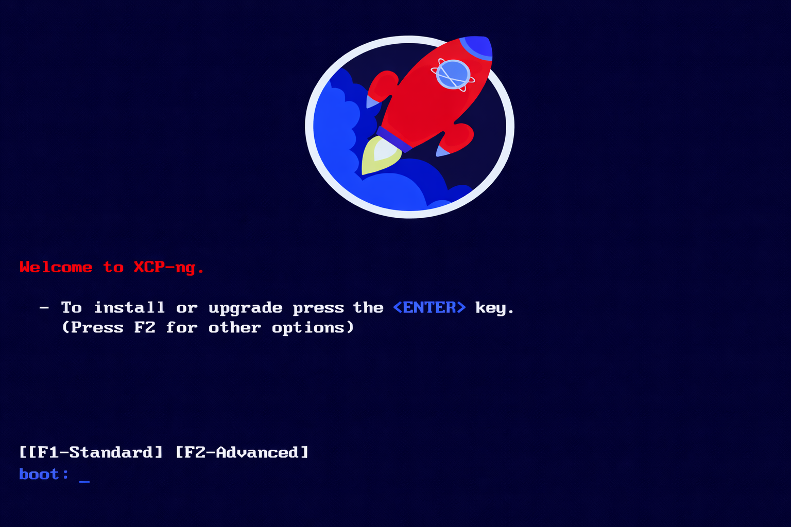
PS: This splash screen is from a photo and requested ChatGPT to
recreate the image as a screenshot.
To go for an install, press the <ENTER>.
Select your preferred keyboard layout.
@Vates team, if anyone see this article one day please, add the bépo layout in this list, that would be awesome !

This steps warns you that you are going to totally erase any data on your disks.

This is the steps, were you have to agree with the End User Agreement.
Even if nobody reads it, would be nice to have access to it in some way before accepting it.
Here looks like we have to Accept the EUA, install XCP-ng to be able to read the agreement...

If you do a brand new install you will not have this screenshot, it shows up only if an XCP-ng installation already exist. This is my case on this machine XCP-ng is already install hence the warning before going ahead in the installation steps.
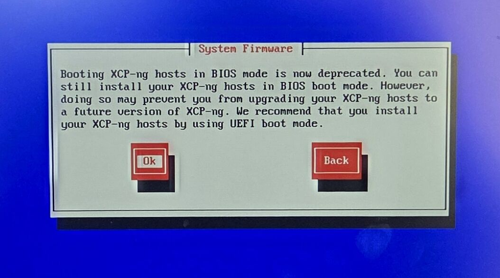
My machine is quite old and the UEFI mode is not working for USB boot. You shouldn’t have this message in any recent machine. Saying that the Bios mode does still work with XCP-ng 8.3 which is good news for backward compatibility even if it is deprecated.
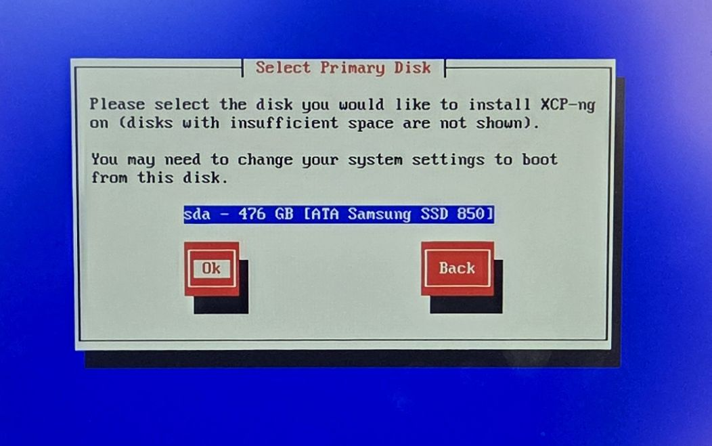
At this stage you will select on which disk you want to install XCP-ng, in my case I have only on disk so the choice is easy :D

Here you will have to choose, on which disk you want to store you VMs.
Here as well, I only have one disk as the other one is the USB key containing the XCP-ng Installer, this will not be an option for storing VMs :D

At this step you need to choose which Storage type you want to use.
In short explanation:
EXT is best to use less storage space and LVM is best for virtual machine performances but use more disk space.
Long explanation:
Thin provisioning means that XCP-ng when it will create virtual disks for your VMs this will only use the storage space that your data in the VM actually use, for instance if you create a Virtual disk of 1TB and put on it 20GB on data, the corresponding disk file will take around 20GB of actual disk space on your host.
By experience this type of provision is good enough for an homelaber or a test lab en a dev/test environment which is not test/validating any performance related scenario.
Thick provisioning will actually reserve all the space as soon as the disk is created whatever the quantity of data you have in the disk. If you create a thick provisioned disk of 1TB, this will actually reserve this amount of data, even if you have only 20GB on effective data in the Virtual disk on your VM.
I would recommend this model in production to make sure you don’t impact the performance and reduce any application performances related to the expansion of the physical file.
You can start small and extend the Disk size from XOA afterward.

In this stage you can select from where you want to get the installation files, in my case, I always used local media which means the installer will get the installation files from the USB Key.

You will then see this screen when the installer is looking for the repository to deploy XCP-ng.

This has been years since I have not done this steps, nowadays medias are quite reliable and we rarely have issues with devices. I would recommend it only if you do a deployment for production environment.

This is the step where you specify the password for the root account, this password is the most important of the platform. Keep it in a safe place.
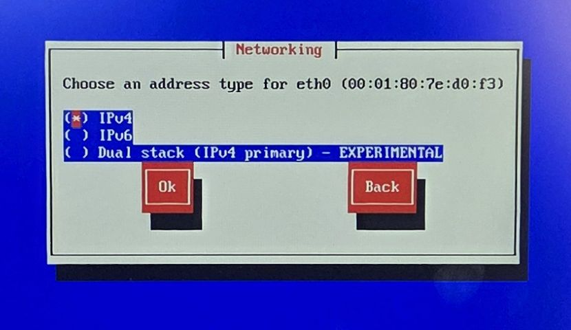
Select the IP version you need, in home lab IPv4 is for good enough, and easier to handle for me.
In the future, I’ll have a better look at IPv6 which bring some interesting security features but that’s for another day.

Here you will have to configure the Network of your XCP-ng. I highly recommend using static configuration or at least reserved address on your DHCP server. If your IP were to change you will need a DNS infrastructure in of your lab to make sure you don’t have to look for the new IP of your XCP-ng machine when it has changed.
Using VLAN is a good idea, if you have the infrastructure for it, this split your networks by purpose to better control your network traffic, and add a layer of security as well since only member of this VLAN will see the content of the network traffic.
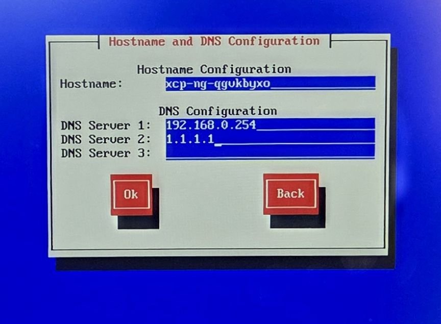
In this step you have to configure your XCP-ng machine name as well as the DNS server.
If you can I recommend having a DNS server in your home lab when you start to have several machines that you need to access through the network.

At this step select the timezone you are in, to have your XCP-ng machine at the correct time.

If your XCP-ng machine has access to internet you can use the default NTP servers which will be public NTP servers. If it doesn’t you can use an internal NTP server in your home lab.
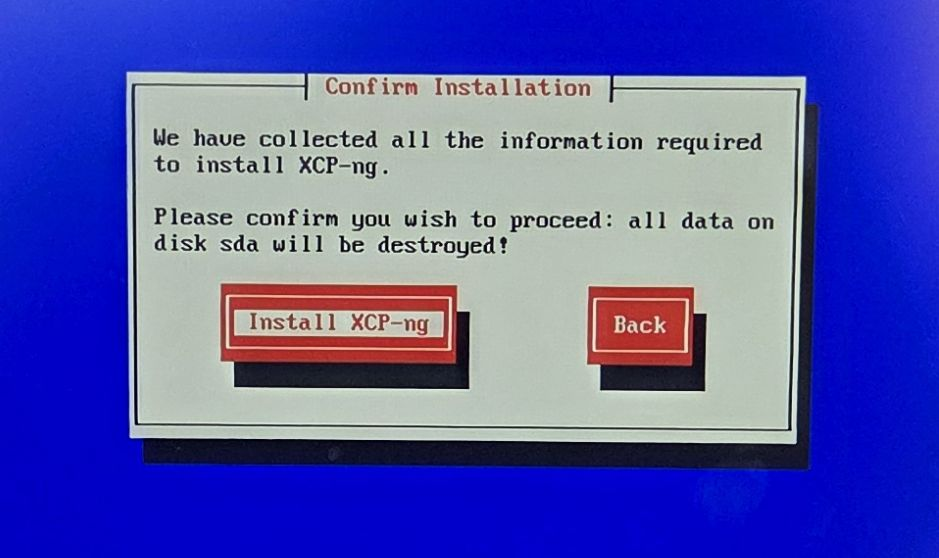
And finally you are all good, and ready to install the XCP-ng.

This is the next screen that you will see where the install prepare all the elements for the installation.

You will then see this screen which show you the progress of the installation of XCP-ng.

And finally the progress of the post-installation of XCP-ng.
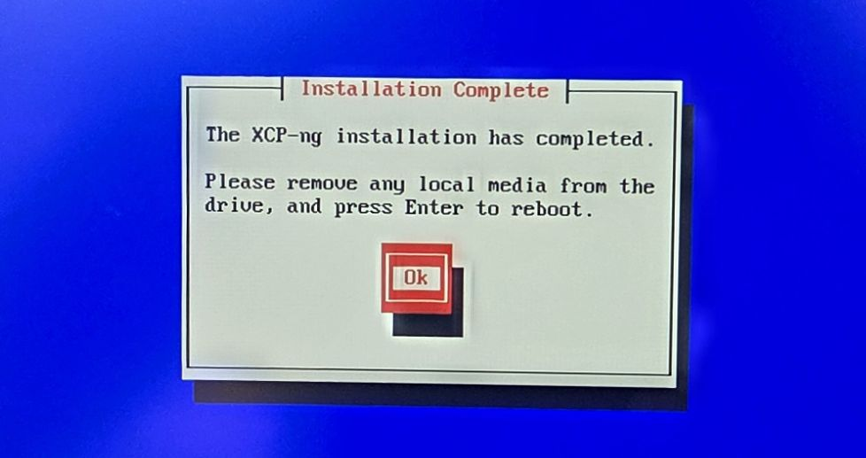
And you are done ! You can remove the USB Key and click on the OK button to restart and get started with your first VMs.
After booting you should see terminal like this one below.
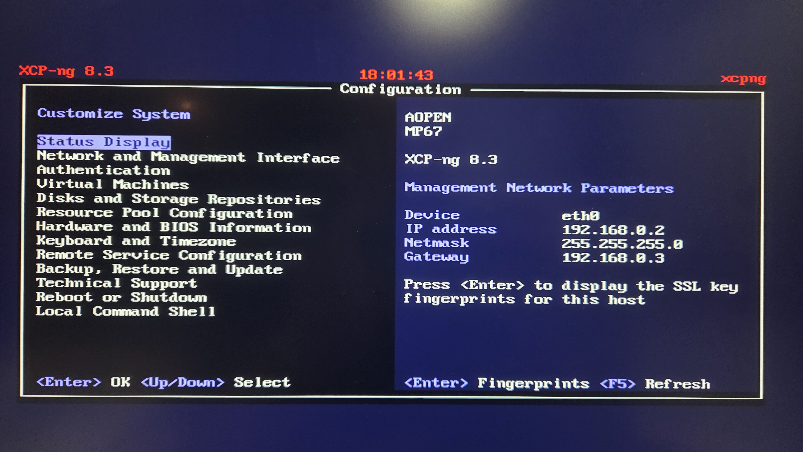
This UI gives you the possibility to do some basic admin task ( Network, view VMs, resources, backup restore XCP-ng, etc) for this host only.
Another option to administer this host only is to use XO Lite which is accessible through a web interface.
You can access it directly on the default https port, by following this URL pattern: https://[XCP-NGHOSTNAME]OR[XCP-NGIP ADDRESS]. For example:
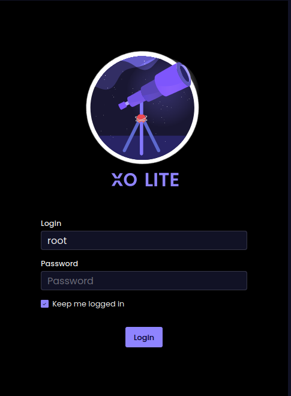
This is the login page of XO lite, once logged in with the root account to which you have specified the password during the installation phase.
You will land on this UI, it is dedicated to administer this machine only.

As the time of writing XO lite is still in active development and some basic features are still missing.
So for now I recommend to go trough the next step which is deployment of the XOA ( Xen Orchestra )
In this step you will deploy XOA, which at this stage is the best tool to manage 1 or more XCP-ng hosts. I won’t go in to much details for this steps as I will have a dedicated article for it, and this one is getting already too long !
Click on the “Deploy XOA” button on the top right corner.
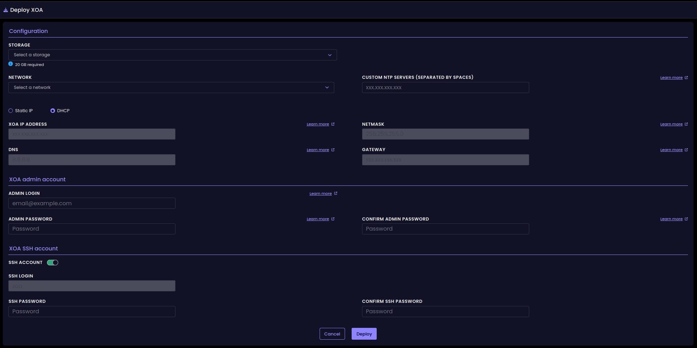
Fill in all the required information then click on the “Deploy” button at the bottom.
Once the deployment is finish you will access to XOA ( Xen Orchestra ) through the IP address provided by default XOA is accessible through HTTP. For example HTTP://192.168.0.2
This is the login screen you should see when accessing the URL.
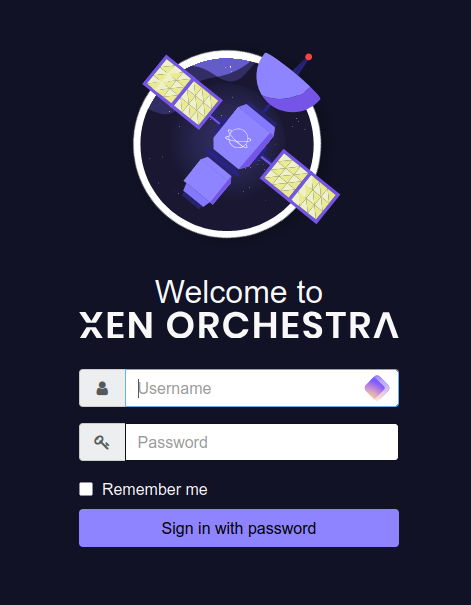
Congratulation you made it until the end of this article !
This is the longest I have done so far hope everything when well and that you can enjoy setting up your first Virtual machines !
See you on the next article, we will talk about Wire Guard VPN setup to access securely my lab remotely.